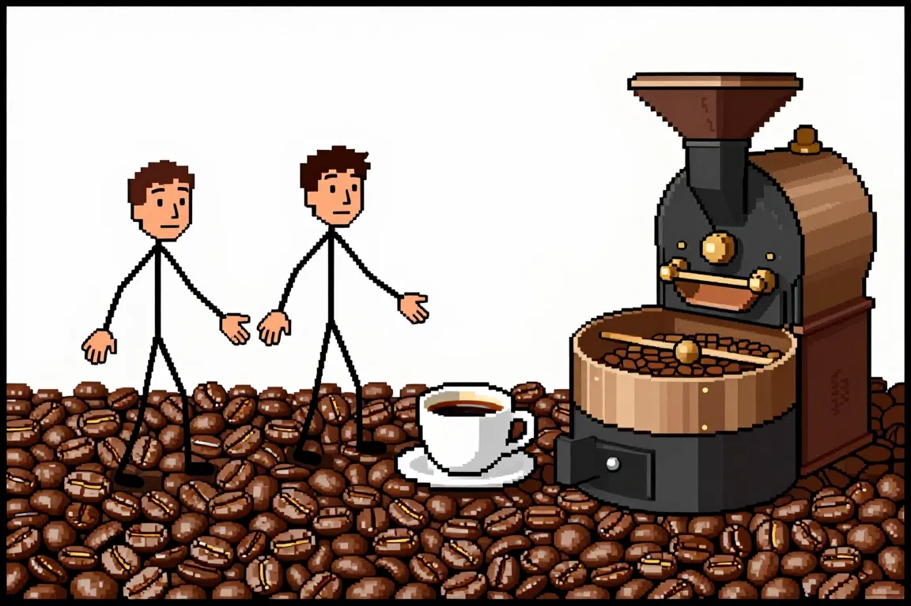

internet · 2008–2015 · also: Rage faces, Rage guy comic, Fffuuu comic
A short comic of 2 to 8 panels drawn in MS Paint with a set of crude faces that show one fixed emotion each. It began on 4chan in 2008 and filled Reddit and 9GAG until about 2015.

Core thesis
Tell a small daily frustration in a few crude panels, with stock faces that every reader knows.
Design principles
Divide the canvas into 2 to 6 panels in a grid of 2 columns, each with a 2px black line.
Draw faces as white ovals with a 3px black outline and a few hard strokes; no shading.
Use one stock face for each emotion: rage, joy, smug, disbelief, sadness.
Write dialogue in the panel as plain text at 16px to 20px, with no speech bubble.
Set the scene on a white ground with stick bodies in black lines of 3px.
Keep the drawing flat and rough; keep the lines wobbly at 2px to 3px off straight.
End on the last panel with the strongest face and a one-line result.